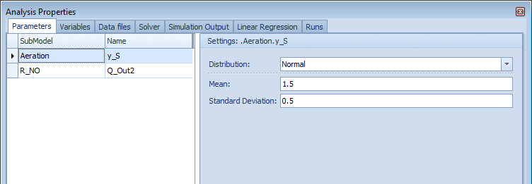
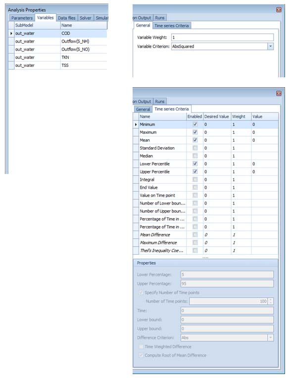

Performance and Large Models¶
Summary: Keeping simulation run times manageable as plant models grow in complexity.
Simulation speed factors¶
WEST solves a system of ordinary differential equations (ODEs) at every timestep. Run time scales with:
| Factor | Impact | Notes |
|---|---|---|
| Number of ODE states | High | Each compartment and each ASM component adds states. More tanks = more states. |
| Model complexity (ASM1 vs ASM2d vs ASM3) | High | ASM2d adds phosphorus; ASM3 adds storage polymers. Both roughly double state count vs ASM1. |
| Simulation duration | Linear | Doubling the simulated period roughly doubles run time. |
| Solver step size | High | Smaller steps = more evaluations = longer run. |
| Solver tolerance | Medium | Tighter tolerance forces smaller steps in stiff regions. |
| Output frequency | Low–Medium | Very high output frequency (every solver step) can add I/O overhead. |
| Hardware (CPU speed) | Direct | WEST uses a single CPU core per simulation run; clock speed matters more than core count. |
Choosing the right solver¶
WEST offers three solver choices in Simulation → Experiment Settings → Solver: LSODA (default), DASSL, and RK45. LSODA is recommended for all standard activated sludge models — it automatically detects stiffness and switches between Adams (non-stiff) and BDF (stiff) methods. DASSL is a fully implicit BDF solver; use it when LSODA reports excessive step-size reductions. RK45 is an explicit Runge-Kutta solver suitable only for non-stiff models; it is rarely the best choice for biological wastewater treatment models but can be faster for simple hydraulic models with no biological kinetics.
WEST exposes solver settings in the Experiment Settings dialogue (accessible from the Experiments panel).

Explicit vs implicit solvers¶
Explicit solvers (e.g. Runge-Kutta RK45) compute the next state directly from the current state. They are fast per step but require very small steps for stiff systems (systems with widely separated time constants — common in ASM models where fast DO dynamics coexist with slow biomass growth). Implicit solvers (e.g. LSODA, DASSL, BDF) solve an algebraic system at each step and can take large steps through stiff regions. For most WEST models, LSODA (the default) automatically switches between explicit and implicit modes and is the best first choice. Switch to DASSL (fully implicit) only if LSODA still struggles.
| Solver type | Use case | Notes |
|---|---|---|
| Explicit (e.g. Euler, Runge-Kutta 4) | Fast dynamics, non-stiff systems | Simple and fast per step, but requires very small steps for stiff ODE systems (e.g. fast nitrification kinetics). Not recommended for full ASM models. |
| Implicit (e.g. DASSL, LSODA, VODE) | Stiff ODE systems, standard ASM models | Adapts step size automatically. Stable for stiff problems. WEST default. |
| LSODA | General purpose | Automatically switches between stiff and non-stiff methods. Good default choice when stiffness is uncertain. |
Recommendation: Use the default implicit solver (DASSL or LSODA) for all ASM-based models. Switch to an explicit method only for simple non-stiff sub-models where explicit integration is confirmed stable.
Step size and tolerance settings¶
The ODE solver uses adaptive step sizes controlled by relative tolerance (RelTol) and absolute tolerance (AbsTol). Default: RelTol = 1×10⁻⁵, AbsTol = 1×10⁻⁶. Loosening tolerances (e.g. RelTol = 1×10⁻⁴) speeds up the simulation but reduces accuracy — acceptable for exploratory runs. For final calibration and reporting runs, use the defaults or tighter. The maximum step size (default 0.1 d) limits how far the solver can jump in one step; reduce it to 0.01 d if results show unexpected discontinuities.
- Maximum step size: Limits how large a single integration step can be. Default is typically 0.01 d (≈ 15 min). For dynamic simulations driven by diurnal influent variation, set the maximum step size to ≤ 1 hour (0.042 d) to resolve diel patterns correctly.
- Relative tolerance (
rtol): Default 1 × 10⁻³. Reducing to 1 × 10⁻⁴ increases accuracy but slows the run. For engineering decisions (not detailed kinetic studies), the default is usually sufficient. - Absolute tolerance (
atol): Default 1 × 10⁻⁶. Should be smaller than the smallest meaningful variable value (e.g. < 0.001 mg/L for trace nutrient components).
Reducing run time¶
Key strategies to speed up slow simulations:
- Increase communication interval: A larger timestep between saved outputs reduces I/O overhead without affecting solver accuracy.
- Remove unused output variables: Deselect variables in Simulation → Output Configuration that you do not need.
- Use steady-state initialisation: Always run a steady-state simulation first and use it as the initial condition for dynamic runs (warm-start).
- Simplify the model: Replace detailed sub-models with simpler alternatives where precision is not required (e.g. point settler instead of 1D settler for preliminary runs).
- Increase solver tolerances: Loosen absolute and relative tolerances slightly (e.g. 1e-5 instead of 1e-6) for exploratory runs; tighten for final results.
- Run on a machine with fast single-core performance: WEST uses a single thread per simulation run; clock speed matters more than core count.
1. Simplify the clarifier model¶
Secondary clarifiers are often the most computationally expensive component. Options in order of increasing simplicity:
- Takács 10-layer clarifier → standard, but solves 10 coupled ODEs.
- Takács 5-layer clarifier → acceptable accuracy for most design work, roughly half the states.
- Simple (1-layer) point settler → use only for steady-state hydraulic checks or very long scenario runs where clarifier dynamics are not important.
For scenario comparisons where effluent solids are not the focus, switching from 10-layer to 5-layer can cut run time by 20–40 %.
2. Use steady-state initialisation¶
Starting a dynamic simulation from a poorly initialised state forces the solver to work through a long transient before reaching a realistic operating point.
- Run a Steady State simulation first to get a converged initial condition.
- Use Save State (in the Experiment Settings → Initial Conditions tab) to store the steady-state result.
- Set the dynamic simulation's initial condition to Load from saved state.
- The dynamic simulation then starts from a realistic operating point and reaches a stable diurnal pattern within 1–3 days rather than 20–30 days.
3. Reduce output frequency¶
The communication interval (set in Simulation → Output Configuration → Settings) determines how often simulation results are saved. A value of 0.1 d (2.4 h) is sufficient for most dynamic studies. For a 365-day run with 100 output variables, reducing the interval from 0.01 d to 0.1 d reduces the output file size by 10× and can halve total run time on I/O-bound systems. Only use very small intervals (< 0.01 d) when capturing fast transients such as SBR cycles or DO dynamics under intermittent aeration.
4. Reduce the number of compartments¶
Each additional tank compartment adds a full set of ODE state variables (13 for ASM1, 19 for ASM2d). A 5-compartment ASM2d model has ~95 ODEs; a 10-compartment model has ~190. For sensitivity analysis and uncertainty analysis runs (hundreds to thousands of simulations), simplify the layout to the minimum number of compartments needed to capture the process behaviour of interest. For example, use a single aerobic compartment for nitrification studies rather than a detailed 5-zone layout.
- More compartments improve plug-flow representation but add ODE states. As a rule of thumb, 3–5 compartments in series approximate plug-flow adequately for most biological models.
- Use 1 CSTR for completely mixed tanks; reserve 5–10 compartments for tanks where longitudinal concentration gradients are critical (e.g. step-feed or plug-flow reactors).
5. Shorten the warm-up period for dynamic calibration¶
Dynamic calibration runs typically require a warm-up period before the calibration period to avoid sensitivity to initial conditions. Instead of running a full warm-up from arbitrary initial conditions, use a steady-state simulation as the starting point (warm-start). This reduces the warm-up period needed from weeks to 1–3 days for most models. See Initialising Models for the warm-start procedure.
- Alternatively, save the model state after a spin-up run and re-use it across multiple parameter estimation runs, avoiding repeated long transients.

Memory considerations for large models¶
WEST stores all output variables for all timesteps in memory during a run, then writes to disk at the end. For very large models (>50 blocks) with long runs (>1 year) and fine output intervals, memory usage can exceed 4–8 GB. Mitigate by: (1) reducing the output variable list to only what is needed; (2) increasing the communication interval; (3) splitting the run into segments using the warm-start feature; (4) for batch/API workflows, use buffer output (in-memory only) and process results between runs.
- WEST stores in-memory time-series for all active output variables during a run. For a model with many blocks and long simulation periods, this can consume several GB of RAM.
- To reduce memory usage:
- Deselect output variables that are not needed (in Experiment Settings → Output, uncheck variables from intermediate blocks).
- Use the Data Output block to write specific variables to file instead of holding them in memory.
- Close and reopen the project between long multi-scenario runs to release memory from previous results.
- Minimum recommended RAM: 8 GB. For models with more than 50 compartments or Scenario Analysis runs with 10+ scenarios, 16 GB or more is advisable.
- WEST does not parallelise individual simulation runs across CPU cores, but a Scenario Analysis or Parameter Estimation experiment can be configured to run scenarios in parallel if multiple licences are available on the same machine.